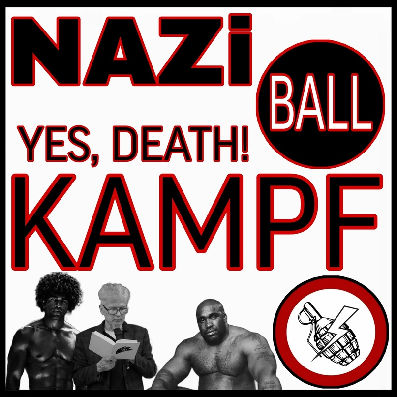

«Большевизм» у нацболов. Разбор программы 2020 года (ДРЭЛ)

Введение
Доброго времени суток, товарищи. Сегодня мы приступаем к анализу современной программы партии нацболов – «Другая Россия Эдуарда Лимонова», написанной в 2020 году. По сути, разбор этот – лишь формальность, так как многие тезисы из данной программы были просто перефразированы и объяснять что-то повторно я не вижу смысла. Поэтому перед прочтением желательно ознакомиться с моими разборами их предыдущей программы. Их нынешний основополагающий документ достаточно мал и ещё более несуразен, чем предыдущий, так что в рамках этой статьи мы спокойно уместим сравнение обеих программ и подведение итогов. Для начала будет представлена программа полностью, далее – разбор.
Программа
"Та земля русская, где говорят по-русски. Эти территории должны воссоединиться." Эдуард Лимонов
Партия «Другая Россия Э.В. Лимонова» намерена осуществить революционные по своим масштабам преобразования.
Мы – национал-большевики. Наша цель – Русский мир и народный социализм.
Внутренняя политика
1. Сменим состав Верховного суда. Сформируем Верховный суд России из честных и независимых юристов. Проведём ротацию судей по всей стране.
2. Установим в стране атмосферу свободы. Аннулируем «антиэкстремистские» статьи УК РФ, прекратим попытки установить цензуру в интернете, легализуем короткоствольное огнестрельное оружие, снизим возраст совершеннолетия.
3. Создадим в стране полноценную избирательную систему: народ будет формировать власть на всех уровнях вплоть до судей и участковых. Ограничения на участие в политике, в том числе, фактический запрет на референдумы – есть форма русофобии.
4. Столица страны будет перенесена в Южную Сибирь. Необходимо сбалансировать географический, экономический, инфраструктурный и политический перекос России в сторону Запада, а также поставить барьер перед китайской экспансией.
5. Проведём кадровую революцию, радикальное обновление руководства страны. Монопольная власть как «патриотических», так и «либеральных» элит, образовавшихся в результате событий 1991 года, будет завершена.
Экономика
6. Построим народный социализм вместо людоедского капитализма. Мы – за тех, кто работает. Экономика будет работать на благо всего народа, а не ради обогащения узкой группы лиц.
7. Обнулим олигархов. Пересмотрим итоги приватизации госсобственности, осуществлённой в 90-е годы, вернем украденное у народа. Введём прогрессивную шкалу налогов, налог на роскошь для богатых. Для государственных сверхкоррупционеров будет отменён мораторий на смертную казнь.
8. Приравняем экологические преступления к преступлениям против нации. Ужесточим экологический контроль, запретим одноразовый пластик, возродим систему сбора вторсырья, построим передовую систему переработки и утилизации отходов. Уважение к своей земле вместо культа потребления.
9. Добьёмся экономической самодостаточности России: выйдем из ВТО, разорвем другие кабальные международные соглашения. Нам нужна промышленно развитая страна, независимая от мировой финансовой олигархии.
Внешняя политика
10. Русские — самый большой и самый разделённый народ Европы. Территории, на которых проживает русскоязычное население, должны вернуться в состав России. Путём Крыма должны последовать Донбасс и вся Новороссия от Харькова до Одессы, Белоруссия, Приднестровье, Северный Казахстан. Далее мы будем стремиться к объединению всех дружественных народов, ранее входивших в состав СССР, вокруг России.
11. Для этого уже сегодня основой внешней политики со странами ближнего зарубежья должны стать поддержка русскоязычных граждан, русской культуры, истории и языка на всём постсоветском пространстве.
12. Русский определяется не по крови, не по вероисповеданию. Тот, кто считает русский язык и культуру своими, русскую историю – своей историей, кто пролил и готов пролить свою и чужую кровь во имя России и только ради неё и никакой другой Родины не мыслит, есть русский.
Разбор
Начнём с блока внутренней политики:
1. Сменим состав Верховного суда. Сформируем Верховный суд России из честных и независимых юристов. Проведём ротацию судей по всей стране.
А куда Конституционный суд делся? Уничтожили уже? А ведь в прошлой программе он имел место быть! Тут нужно отметить, что в нашей системе верховными органами судебной власти является Конституционный суд, Верховный суд, а раньше был Высший арбитражный суд, но его упразднили. То есть, за высшей инстанцией в хозяйственных спорах между юридическими лицами осуществлял высший арбитраж.
Как известно, Верховный суд – главный орган по вопросам общей юрисдикции, а Конституционный – высшая инстанция в сфере соблюдения норм конституции. Да, есть страны, в которых устроено по-другому: один Верховный суд, который выполняет все эти функции, например, Япония. У них Верховный суд выполняет функции Конституционного суда. Может, нацболы собираются сделать Верховный суд «судом всех судов»? Но это лишь моё предположение.
3. Создадим в стране полноценную избирательную систему: народ будет формировать власть на всех уровнях вплоть до судей и участковых. Ограничения на участие в политике, в том числе, фактический запрет на референдумы – есть форма русофобии.
Мне так нравится вот эта формулировка: «народ будет формировать власть». Но, наверное, логичней было бы написать, уж если они большевики – «народ будет управлять непосредственно», а уж там нюансы избирательной системы. Вообще, это вполне нормальное явление для буржуазных и капиталистических систем, когда народ формирует власть, и власть перед ним формально ответственна. А что мы здесь видим? Только «формирует». Об ответственности ни слова. И, как у них принято, ни о каких Советах речь не идёт.
5. Проведём кадровую революцию, радикальное обновление руководства страны. Монопольная власть как «патриотических», так и «либеральных» элит, образовавшихся в результате событий 1991 года, будет завершена.
Они здесь уже не говорят о том, что будут созданы некие «новые» элиты. Видимо решили убрать этот пункт, который мы обсуждали в разборе программы 2010 года. Но утверждают, что монопольная власть элит, которые с 1991 года засели в Кремле, будет завершена. Что далее – непонятно. Однако есть стойкое впечатление, что ребята имеют в виду себя в роли элитариев, но решили разумно промолчать. Нам всё-таки опять предлагают группу привилегированных граждан, которые будут «равнее» всех остальных?
В целом по блоку внутренней политики в версии «Другая Россия Эдуарда Лимонова» большие вопросы. Что они думают о социальной структуре общества? Какова их позиция в отношении теории классов и как это скажется на госстроительстве? А про Советы я уже отмечал выше. Впрочем, даже со словом «большевики» в названии партии они обнародовали правобуржуазную программу, чего от них требовать сейчас?..
Переходим к экономическому блоку.
6. Построим народный социализм вместо людоедского капитализма.
«Народный социализм» – это понятие без точного определения. Будь то энесы 1906 года, ходжаисты, современные ревизионисты из НСДР – да кто угодно – у всех понятие «народного социализма» разное. Но вот у нацболов (всё же будем их так называть по старой памяти), его, кажется, вообще нет. Термин «народный социализм» никак ими не объясняется и не трактуется. И я говорю не только про программу, но и про другие их работы. Если вы где-нибудь встретите у них объяснение этого понятия, то прошу сообщить.
Далее в том же пункте: «Экономика будет работать на благо всего народа, а не ради обогащения узкой группы лиц». Возможно, тот факт, что из программы исчезло упоминание неких новых элит, всё-таки вполне осознанно и неслучайно. Тем не менее, не становится понятнее, на каких принципах будет формировать власть народ. К тому же мои подозрения подкрепляет ещё и то, что мысль про работающую на благо всего народа экономику не единожды озвучивал Владимир Владимирович Путин, который в элитах знает большой толк!
7. Обнулим олигархов. Пересмотрим итоги приватизации госсобственности, осуществлённой в 90-е годы, вернем украденное у народа. Введём прогрессивную шкалу налогов, налог на роскошь для богатых. Для государственных сверхкоррупционеров будет отменён мараторий на смертную казнь.
Обнулим олигархов – Президент РФ В.В. Путин устами пресс-секретаря как-то заметил, что олигархов у нас в государстве нет. Допустим, нацболы их обнаружат. Интересно, какими методами и в соответствии с какими законами их будут «обнулять»?
А как они вернут украденное у народа? И, самое главное, кому? Нацболы не уточняют будет национализация или нет, просто абстрактное «вернём украденное». Далее. Население хотят «осчастливить» прогрессивной шкалой и налогом на роскошь. Ясно-понятно – наши «большевички» не будут парится ликвидацией класса эксплуататоров, а то, чего доброго, эксплуататоры их партию с концами уже сейчас запретят. И моё подозрение насчёт элит переросло в уверенность – вместо либерально-демократического «шила» нам таки подсунут правобуржуазное «мыло».
«Для государственных сверхкоррупционеров будет отменён мараторий на смертную казнь» - в России нет моратория на смертную казнь, она вообще отменена, что закреплено Конституции РФ. Ладно, предположим, нацболам каким-то чудом удалось продавить принятие нового основного закона страны, в соответствии с которым можно будет казнить «сверхкоррупционера». А как быть с гражданами, наносящими непоправимый ущерб безопасности государства? Как быть с теми, кто совершает страшные преступления против личности? Судя по всему, эта безграмотная формулировка про какой-то мораторий имеет целью воздействовать на широкие массы, которые в силу растущего материального расслоения и безнаказанности элит, погрязших в коррупции, жаждут известно, какой справедливости – повесить барина. И ещё насчёт безграмотности: если вы увидели в цитировании программы нацболов ошибку в слове «мораторий», написанный как «мараторий», то в таком виде это и было представлено на их официальном сайте.
8. Приравняем экологические преступления к преступлениям против нации. Ужесточим экологический контроль, запретим одноразовый пластик, возродим систему сбора вторсырья, построим передовую систему переработки и утилизации отходов. Уважение к своей земле вместо культа потребления.
Экологические преступления – это понятно. Берегите природу, мать вашу. Но хотелось бы подробностей про преступления против нации в Российской Федерации. Наши национально ориентированные «большевики» какую нацию имеют в виду? В Уголовном Кодексе РФ, например, нет статьи о преступлениях против нации, зато предусмотрена ответственность за разжигание межнациональной розни. Какую нацию выбрали себе нацболы в качестве той, что превыше всего, мы понимаем, но не будет ли обидно остальным нациям в России, что экологические преступления — вот конкретно для них никакие и не преступления? Или «другороссы» имеют в виду, что почти 200 национальностей, проживающих в нашей стране – это одна нация? Хотелось бы подробностей, а то попахивает разжиганием розни.
Уважение к своей земле вместо культа потребления.
Ну, тут ничего нового. Мы давно выяснили, что общественно-экономический уклад нацболы менять не планируют. Так что правящий класс (он же новая элита), как обычно, сам разберётся, как ему с культом потребления поступить. А вот тех, у кого денег мало и звать их никак, будут убеждать меньше жрать, покупать одни, а не двое штанов в год, и не стремиться в шайтанский Египет или Турцию. Надо затянуть пояса, потому что врагов нации с каждым днём прибывает, и страшно уважать свою землю. Кто поможет нищебродам забороть культ потребления – РПЦ или какие-нибудь неоязычники – нацболы, я уверен, решат в рабочем порядке.
Как напряженная работа по отлову экологических врагов нации, организации самой передовой в масштабах планеты системы утилизации мусора и борьба с культом потребления помогут трудящемуся классу страны? Вопрос, конечно, риторический.
9. Добьёмся экономической самодостаточности России: выйдем из ВТО, разорвем другие кабальные международные соглашения. Нам нужна промышленно развитая страна, независимая от мировой финансовой олигархии».
О как! «Наша промышленно развитая страна будет независима от мировой финансовой олигархии». От своей зависима будет, а от мировой ни в коем разе не будет! Рабочему классу, если что, глубоко плевать, кто его будет обирать – транснациональный олигарх или национально-патриотический. А вообще, эту сказочку о том, как мы сейчас будем выходить из ВТО, кто только не рассказывал. Особенно перед выборами.
Вновь отмечу, что вопрос национализации был полностью убран из программы, однако присутствовал (хоть и в извращённом виде) в прошлой документе 2010 года. К тому же, нет отмены частной собственности, нет индустриализации, даже про сельское хозяйство больше не говорят. Таким образом, обещания «экономической самодостаточности», учитывая полуколониальный экономический уклад в современной нам России, являются не более чем благоглупостью или намеренной ложью.
Переходим к блоку внешней политики:
10. Русские — самый большой и самый разделённый народ Европы. Территории, на которых проживает русскоязычное население, должны вернуться в состав России. Путём Крыма должны последовать Донбасс и вся Новороссия от Харькова до Одессы, Белоруссия, Приднестровье, Северный Казахстан. Далее мы будем стремиться к объединению всех дружественных народов, ранее входивших в состав СССР, вокруг России.
С тем, что русский народ – самый разделённый народ не только Европы, но, возможно, и мира, не поспоришь. Судя по всему, перечисленные нацболами территории по аналогии с Крымом мы будем возвращать/присоединять, в том числе силовым методом с расчетом на то, что эти действия активно поддержат соотечественники. Но в успехе такого метода сейчас большие сомнения – достаточно посмотреть на события на Украине. Рассказывать можно, что угодно, но для того, чтобы твои разделённые контрреволюционным переворотом соотечественники кинулись нам в объятия, нужно вести планомерную работу (пропаганда, «ручные» лидеры землячеств и прикормленные местные элиты, госпрограммы поддержки и т.д.). Но самое главное – наши люди должны видеть, что в России всё обстоит гораздо лучше, чем там, где они волею судьбы и врагов народа оказались, что их любят и ждут. Надо ли говорить, что такой деятельности, которая занимает десятилетия, не велось, и в случае внезапного и неподготовленного воплощения в жизнь «хотелок» нацболов мы получим новые кровавые очаги гражданской войны, которая, то затихая, то усиливаясь идёт на территории бывшего СССР вот уже почти 40 лет (да-да, первые серьёзные конфликты начались в середине 80-х годов прошлого века).
11. Для этого уже сегодня основой внешней политики со странами ближнего зарубежья должны стать поддержка русскоязычных граждан, русской культуры, истории и языка на всём постсоветском пространстве.
Собственно, это единственный пункт, с которым я согласен с чисто практической точки зрения. Другое дело, что с 2020-го года это самое «уже сегодня» так и не наступило. Также не понятно, на какой идеологической основе нацболы собираются консолидировать русских на постсоветском пространстве. Наверное, будут декламировать фашиста Ильина, кого ж ещё? Как бы там ни было, даже с бердяевыми и ильиными российская олигархия (истинная власть в РФ) этим заниматься не будет. Ей такое не понятно и не нужно: у неё нет национальности и идеологии, кроме поддержания нормы прибыли.
Русский определяется не по крови, не по вероисповеданию. Тот, кто считает русский язык и культуру своими, русскую историю – своей историей, кто пролил и готов пролить свою и чужую кровь во имя России и только ради неё и никакой другой Родины не мыслит, есть русский.
Для начала обратимся к классике:
«Согласно марксистской теории нации, получившей во всех коммунистических партиях общее признание как единственно правильной, «нация есть исторически сложившаяся устойчивая общность людей, возникшая на базе общности четырёх основных признаков, а именно: на базе общности языка, общности территории, общности экономической жизни и общности психического склада, проявляющегося в общности специфических особенностей национальной культуры». Сталин И. Национальный вопрос и ленинизм (март 1929 г.) - Соч., т.11, М., 1949, с.333.
Ошмётки большевистского понимания понятия нации у нацболов, как мы видим, сохранились, однако толку от этого ноль: они предлагают почти двумстам национальностям, проживающим в России осознать себя русскими, но не поясняют, во имя чего. Напомню ст. 13 п. 2 Конституции РФ:
«Никакая идеология не может устанавливаться в качестве государственной или обязательной».
Поскольку «Другая Россия Эдуарда Лимонова» не собирается строить коммунистическое общество, 145-ти миллионам граждан буржуазной России предлагают бесплатно слиться в нирване в небесным Кремлём.
Уточнение и разбор конкретных вопросов в сравнении двух программ
Как уже говорилось, о национализации средств производства в этой программе не упоминалось, однако о ней шла речь в прошлой. На регулярные вопросы по этой теме нацболы отвечают примерно так: «Мы, конечно, большевики и в общем-то выступаем и за национализацию, и за индустриализацию, и за развитие сельского хозяйства. Но есть важный момент: мы в любом случае будем отталкиваться от интересов русского народа». В том же ключе «другороссы» говорят о сохранении элит: «Если сохранение элит будет в интересах русского народа, то мы их сохраним, если в интересах русского народа будет часть средств производства национализировать, а часть, все-таки отдать в частные руки для более эффективного пользования, то мы это сделаем». Их позиция, так или иначе крутится вокруг оси «русский народ», и они готовы менять в те или иные ключевые моменты своей программы, тактики и стратегии в зависимости от интересов «русского народа». Тут всё упирается в то, как нацболы будут всё это трактовать. Логично предположить, что люди, позиционирующие себя большевиками, должны придерживаться диалектического понимания истории. Например, они должны понимать, что при переходе от одной общественной формации к другой господствующий класс, пусть он и эксплуататорский, носит вполне прогрессивный характер. Та же раннефеодальная аристократия и первые капиталисты. Но в конечном счете эти поначалу передовые классы неизбежно деградируют. Очевидно, что в результате контрреволюции не только Советский Союз развалился на части и был отброшен назад в общественном развитии, та же участь постигла и остальные страны. Теперь давно достигший пика капитализм продолжает разлагаться, пожирать сам себя вместе с народонаселением и, не имея противодействия в лице СССР, неуклонно тащит человечество в пропасть фашизма. Понимают ли это те, кто называет себя национал-большевиками? Ответ: нет. Они, как мы видим, не собираются отказываться от частной собственности на средства производства, не осознают значения неутихающей классовой борьбы. Более того, они и не скрывают, что капиталистический уклад с привилегированным классом буржуазии будет сохранён. Есть у них что-то про социализм, но в их версии он отчётливо пованивает национал-социализмом. Какой уж тут большевизм…
В заключение приведу несколько заданных им вопросов по программе. Некоторые ответы будут прокомментированы, а некоторые в этом не нуждаются.
Вопрошающий не уточнил, о какой революции речь, но нацболам всё равно – лишь бы во главе был русский народ. Такой вот интернационализм у «большевиков».
Таким образом, буржуазная выборная система будет сохранена. В законодательные органы власти будут снова идти те, кто сможет себе это позволить в силу замечательного материального положения, достигнутого за счёт присвоения прибавочной стоимости, а так же те, кого капиталисты будут финансировать. Деятельность таких выборных органов, как и сейчас, будет сведена, в основном, к лоббированию частных бизнес-интересов, которые, мягко говоря, далеко не всегда совпадают с интересами государства. Про депутатов от трудовых коллективов мы тут даже говорить не будем – никаких Советов!
Эти господа, которые хотят привести новую элиту (себя), пытаются нас убедить, что проведут национализацию и пересмотрят итоги приватизации. Ложь. На деле мы получим обычное перераспределение собственности. Активы перейдут от нехорошей криминальной элиты к правильной и честной элите, и всё заиграет совсем по-другому (нет). Ну и предложение желающим строить коммунизм где-нибудь на огороженной территории под присмотром и не в ущерб стране звучит, как анекдот, правда весьма пугающий. Отличные большевички!
Вывод
Итак. Никаким большевизмом у нацболов даже и не пахнет. Термин «нацбол», сам по себе является неким оксюмороном, потому что большевики никогда не были националистами. Усопший вождь партии Эдуард Лимонов, будучи писателем и большим поклонником модернизма и пост-модернизма, вот такое название придумал, что в контексте его увлечений очень даже объяснимо и понятно. Однако нацболы стараются соответствовать, как могут, скрещивают ужа с ежом, мимикрируя под левую идеологию. По ряду тезисов, можно вполне смело заявить о том, что политика предлагаемая партией «Другая Россия Эдуарда Лимонова» является ничем иным как государственным капитализмом с широким частным сектором и сохранением класса буржуазии в качестве гегемона. На данный момент это во многом провластная занятая абсолютно бессмысленным акционизмом арт-группа. Её художественная концепция реализуется в сфере политики. Их взгляды на общественное устройство и госстроительство достаточно наивны и размыты.
Если сравнивать две программы, то можно заметить, что гораздо подробнее и качественнее была первая – 2010 года. Деградация может быть связана с постепенным спадом популярности партии, уходом харизматиков, что произошло в результате ухода из жизни их вождя-основателя, человека, надо признать яркого и талантливого.